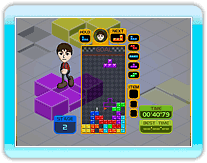

16 |
Giocatore singolo |
 |
 Si gioca con le regole classiche di Tetris. Si gioca con le regole classiche di Tetris.Sovrapponi i tetramini man mano che vengono visualizzati ed eliminali. La partita si conclude quando i blocchi si accumulano fino in cima al campo di gioco dove vengono visualizzati i tetramini. Se infinito è su OFF, punta al punteggio migliore eliminando 150 righe nel tempo più breve. Se è ON, punta a un punteggio alto giocando il più a lungo possibile.
 Si gioca con le regole classiche di Tetris.
Si gioca con le regole classiche di Tetris.Sfida il computer cercando di eliminare le righe. Vince chi per primo riesce a bloccare l'avversario in una situazione di stallo (game over). Elimina le righe per inviare blocchi di penalità nel campo di gioco dell'avversario. Vi sono 15 giocatori computer (liv. da 1 a 15) e le vittorie e le sconfitte contro ciascuno di essi sono registrate singolarmente nei Record personali.
Punta al punteggio più alto aiutando lo scalatore a raggiungere la meta nella parte superiore del campo di gioco. Il climber sale automaticamente un gradino salendo di un blocco. Guida lo scalatore formando dei gradini con i tetramini. Accertati di non trascurare nessuna bandiera dei checkpoint lungo il percorso.
I punti dipendono dal tempo complessivo raggiunto per 10 stage di gioco. Ottieni un Calcia linea per ogni passaggio a un checkpoint.
 Posiziona i tetramini riempiendo l'ombra nel campo di gioco e crea la forma indicata. La velocità di completamento non conta: Posiziona i tetramini riempiendo l'ombra nel campo di gioco e crea la forma indicata. La velocità di completamento non conta:devi solo riempire tutta l'ombra per completare lo stage. Punta al tempo migliore e al migliore livello di completamento di ogni stage per ottenere il punteggio più alto. Hai solo 3 minuti per completare ogni livello.
 Guida un tetramino in caduta in un campo di scorrimento obbligato fino a raggiungere la meta, che si trova 400 righe più in basso. Guida un tetramino in caduta in un campo di scorrimento obbligato fino a raggiungere la meta, che si trova 400 righe più in basso.La partita termina se il percorso del tetramino è interrotto da un blocco penalità o da un'altra ostruzione e finisce fuori dalla schermata. Il più veloce a raggiungere la meta ottiene un punteggio elevato. |

 |
 |
 |